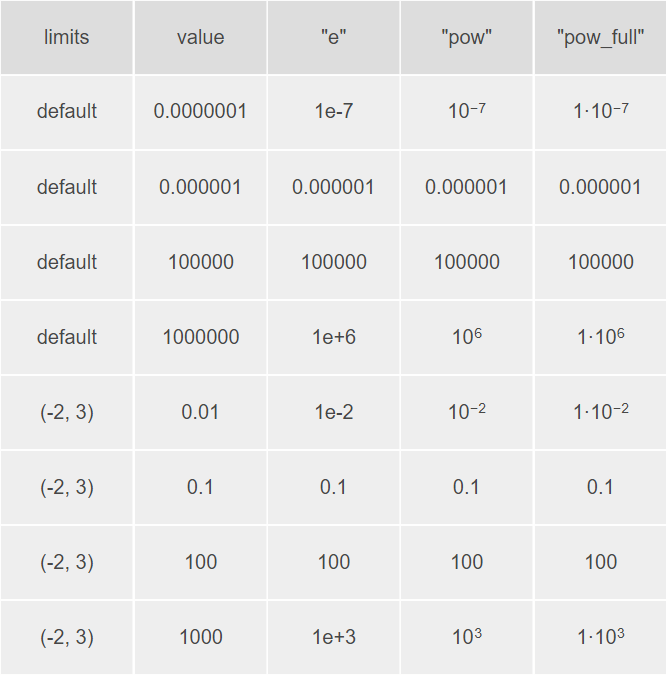

Formatting
Formatting provides the ability to do complex variable substitutions and value formatting.
Number Format
The numeric format strings are used to format common numeric types. The general form of a format specifier is:
fill- can be any character, defaults to a space if omitted. The presence of a fill character is signaled by the*align*character following it, which must be one of the alignment options.align- the various alignment options is as follows:>- forces the field to be right-aligned within the available space (default behavior);<- forces the field to be left-aligned within the available space;^- forces the field to be centered within the available space;=- like>, but with any sign and symbol to the left of any padding.
signcan be:-- nothing for zero or positive and a minus sign for negative (default behavior);+- a plus sign for zero or positive and a minus sign for negative;(space) - a space for zero or positive and a minus sign for negative.
symbolcan be:$- apply currency symbols per the locale definition;#- for binary, octal, or hexadecimal notation, prefix by0b,0o, or0x, respectively.
zero(0) option enables zero-padding; this implicitly sets fill to0and align to=.widthdefines the minimum field width; if not specified, then the width will be determined by the content.comma(,) option enables the use of a group separator, such as a comma for thousands.precisiondepending on thetype, theprecisioneither indicates the number of digits that follow the decimal point (typesfand%), or the number of significant digits (types,e,g,r,sandp). If the precision is not specified, it defaults to 6 for all types except(none), which defaults to 12. Precision is ignored for integer formats (typesb,o,d,x,Xandc).~trims insignificant trailing zeros across all format types.typedetermines how the data should be presented:e- exponent notation;f- fixed point notation;g- either decimal or exponent notation, rounded to significant digits;s- decimal notation followed by SI prefix symbol, rounded to significant digits;%- multiply by 100, and then decimal notation with a percent sign;b- binary notation, rounded to integer;o- octal notation, rounded to integer;d- decimal notation, rounded to integer;x- hexadecimal notation, using lower-case letters, rounded to integer;X- hexadecimal notation, using upper-case letters, rounded to integer;c- simple toString.
The following prefix symbols are supported for
stype:y- yocto, 10⁻²⁴z- zepto, 10⁻²¹a- atto, 10⁻¹⁸f- femto, 10⁻¹⁵p- pico, 10⁻¹²n- nano, 10⁻⁹µ- micro, 10⁻⁶m- milli, 10⁻³(none) - 10⁰k- kilo, 10³M- mega, 10⁶G- giga, 10⁹T- tera, 10¹²P- peta, 10¹⁵E- exa, 10¹⁸Z- zetta, 10²¹Y- yotta, 10²⁴
Number Format Examples
Let's format the number 1024:
Some other examples:
See more examples here.
String Template
The number format can be used in a template to create a string with variable substitution. The string template contains “replacement fields” surrounded by curly braces {}. Anything that is not contained in braces is considered literal text, which is copied unchanged to the result string. If you need to include a brace character in the literal text, it can be escaped by doubling: {{ and }}. This approach is used in functions layerTooltips(), layerLabels() and smoothLabels() to customize the content of tooltips and annotations.
See: Tooltip Customization in Lets-Plot and Annotating Charts in Lets-Plot.
Date and Time Format
Provides formats for date and time values.
The list of supported directives to format date/time values:
%a- weekday as an abbreviated name (Sun, Mon, …, Sat);%A- weekday as a full name (Sunday, Monday, …, Saturday)%b- month as an abbreviated name (Jan, Feb, …, Dec);%B- month as a full name (January, February, …, December);%d- day of the month as a zero-padded decimal number (01, 02, …, 31);%e- day of the month as a decimal number (1, 2, …, 31);%j- day of the year as a zero-padded decimal number (001, 002, …, 366).%m- month as a zero-padded decimal number (01, 02, …, 12);%w- weekday as a decimal number, where 0 is Sunday and 6 is Saturday (0, 1, …, 6);%y- year without century as a zero-padded decimal number (00, 01, …, 99);%Y- year with century as a decimal number (0001, 0002, …, 2013, 2014, …, 9998, 9999);%H- hour (24-hour clock) as a zero-padded decimal number (00, 01, …, 23);%I- hour (12-hour clock) as a zero-padded decimal number (01, 02, …, 12);%l- hour (12-hour clock) as a decimal number (1, 2, …, 12);%M- minute as a zero-padded decimal number (00, 01, …, 59);%p- "AM" or "PM" according to the given time value;%P- like %p but in lowercase: "am" or "pm";%S- second as a zero-padded decimal number (00, 01, …, 59).
Datetime Format Examples
Let's apply the format string to the date Aug 6, 2019 and the time 4:46:35:
Scientific Notation
The exponentFormat parameter of the theme() function controls the appearance of numbers formatted with e or g types. Scientific notation can be displayed using regular e-notation or with superscript powers of 10. For g type formatting, you can also specify when scientific notation should be applied based on exponent bounds.
The value is either a string - style, or a tuple: (style, lower exp.bound, upper exp.bound). Where the style can be:
"e"for e-notation (e.g., 1e+6);"pow"for superscript powers of 10 in shortened form (e.g.,); "pow_full"for superscript powers of 10 with coefficient (e.g.,).
For g type formatting, scientific notation is applied when the number's exponent is less than or equal to the lower exp.bound (-7 by default) or greater than or equal to the upper exp.bound (6 by default, but can be affected by precision in format specifier).
The following table demonstrates the behavior with format string ",~g":

Tooltip Customization
You can format text in tooltips, see: Tooltip Customization.
Axis Tooltips
To format the axis tooltips, follow the rules:
the scale's
formatparameter is applied to tick labels only and does not affect tooltips;the
format()method oflayerTooltips()is also applied to the axis tooltip;if the
format()method is not specified, the tooltip will get the value after applying the default formatting from the scale (without using the specified format for the scale).
Annotating Charts
Use formatting in annotation labels and templates (e.g., via format()); see: Annotating Charts.